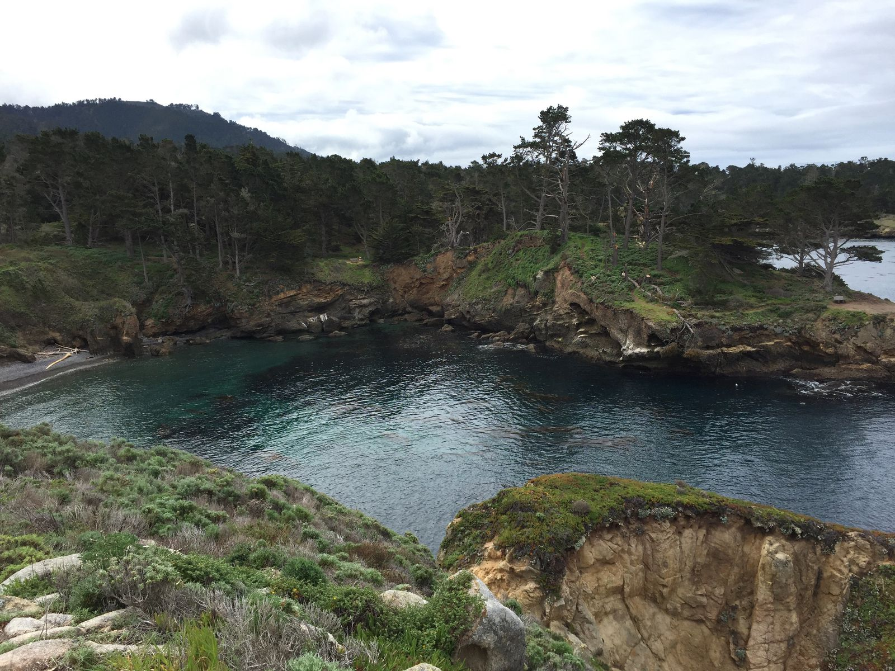
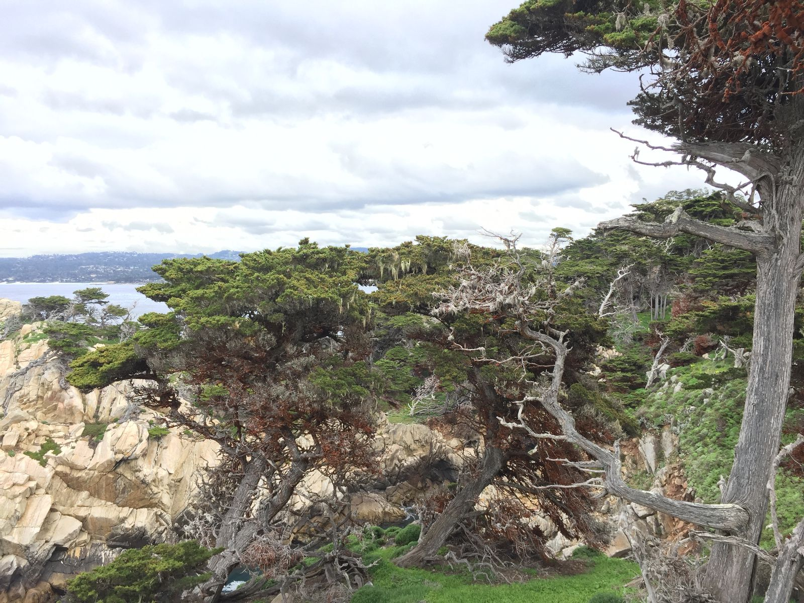
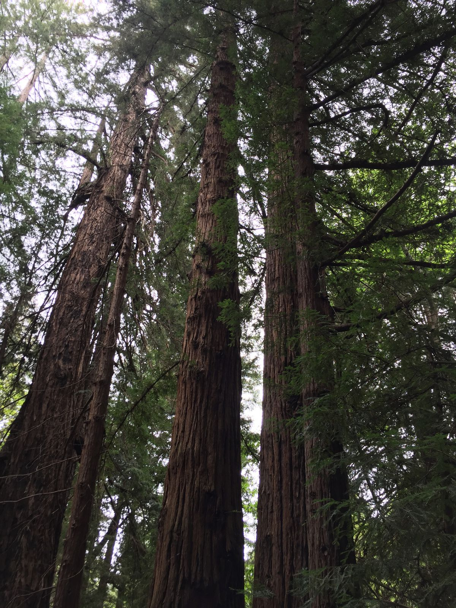
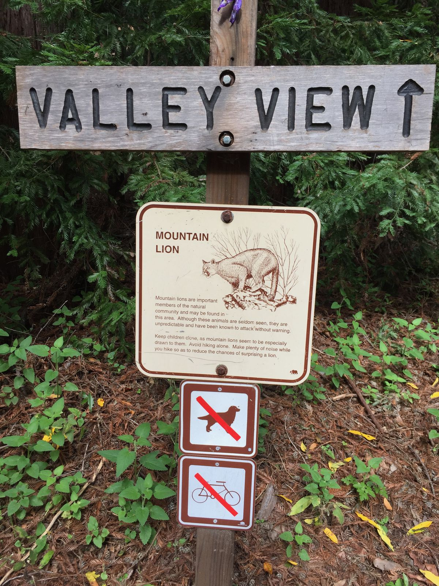
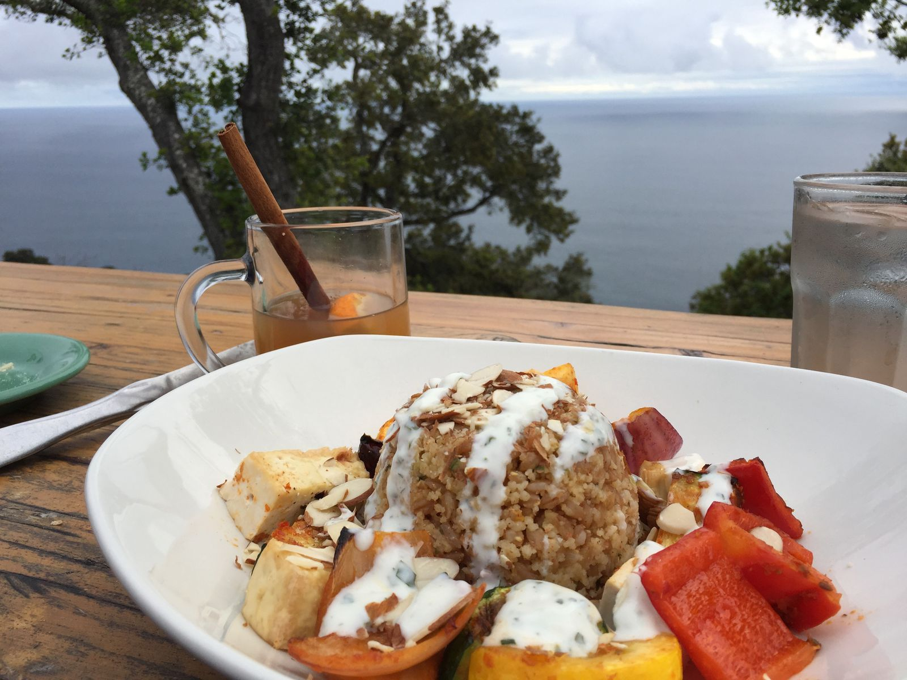
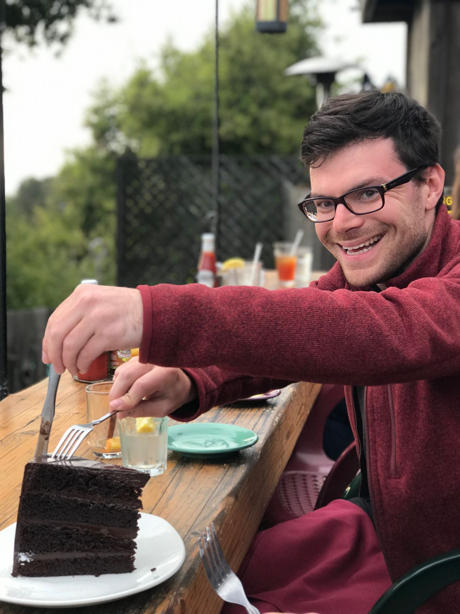
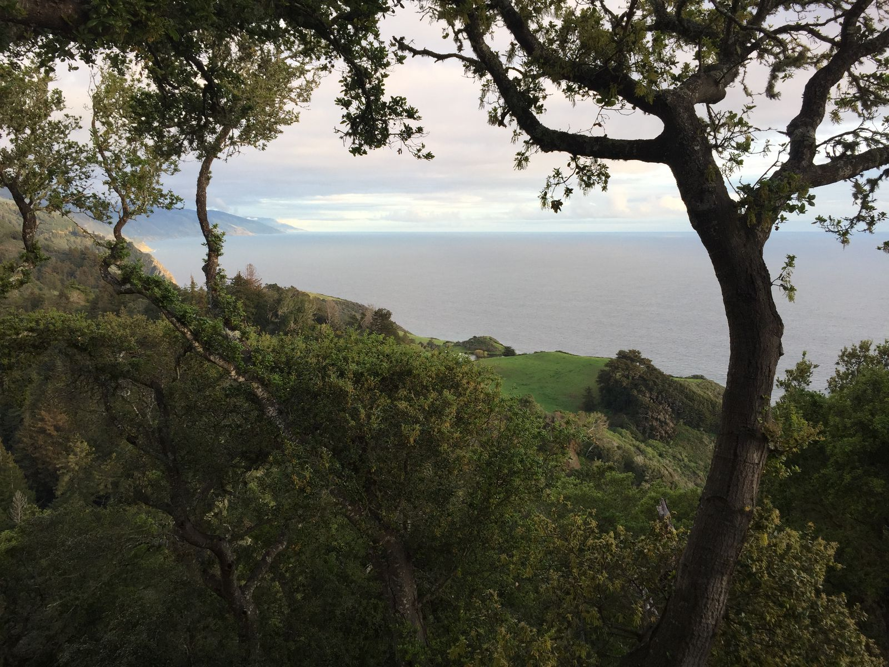
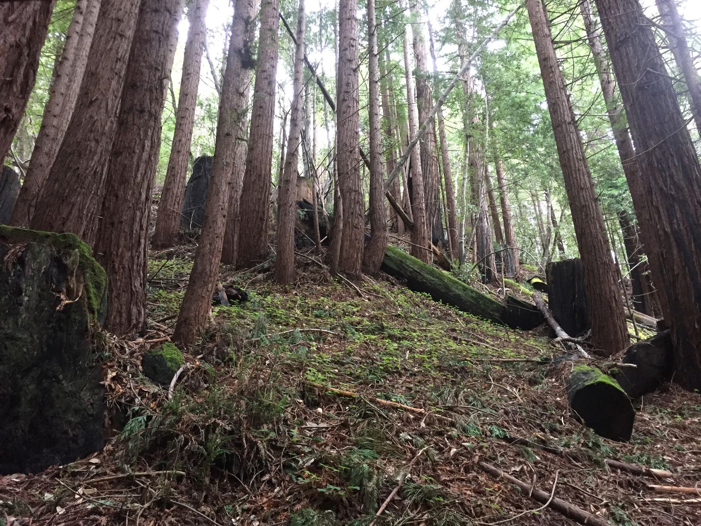

Big Sur
I’m back at the cabin for night two. It’s about 8pm. I left my iPad in the car. It would take me about twenty minutes to get. And I’m already in my pajamas. It’s okay. I’m exhausted.
After not eating much yesterday, I started the day today with a big breakfast. In the cabin, I made three scrambled eggs and earl grey tea. On top of that I had a banana, a clementine, and a Clif bar. It was pretty cold—high fifties—so I turned on the propane heater after some tinkering.

My first stop was Point Lobos State Natural Reserve. It was maybe twenty minutes north from the cabin. I had two destinations there: Whaler’s Cove and Sea Lion Point. Whaler’s Cove was a fairly short, flat walk, so I went a little further to Granite Point. The hike to Sea Lion Point and around Point Lobos was gorgeous, but there were no sea lions.

After lunch, I went to Pfeiffer Big Sur State Park to hike Valley View Trail to Pfeiffer Falls. Unfortunately the trail to the waterfall was closed, but I was able to hike up to the top to get the good valley view. There were even people there to take my picture. The hike itself was about an hour and was mostly uphill.

At the start of the train, there was a sign warning about mountain lions. It said not to travel alone and not to be quiet so as to not surprise the cats. I was alone and I am not good at being loud. Thankfully I was not eaten by a mountain lion.

For dinner I went to Nepenthe, a restaurant with a view. More people recommended this place than anything else for my whole trip. I got a rum spiked cider and some spicy vegetable dish. I sat on the ledge and got to watch the Pacific while eating dinner.

I didn’t pay too much attention to the couple sitting next to me while eating dinner, but I did catch this part of their conversation:
Tracy: It's broccolini, not broccoli—you don't like it
Dana: It's a stupid vegetable
Tracy: You're an idiot
You may wonder how I learned their names. It turns out that Dana and I wanted the same dessert—the four layer dark chocolate cake—but neither of us wanted to eat the entire giant dessert. Tracy has just started a diet three days ago and wouldn’t be tempted. So Dana and I split the cake.

We got to talking and I learned that they were visiting Big Sur from Santa Cruz for a concert. He’s a lawyer and she works in the restaurant industry. The two seemed well read and gave me some suggestions for my trip. They also thought I looked exactly like their friend’s son who is twenty. The waitress, who had worked at the restaurant for twenty five years and was maybe in her mid to late fifties, said that I would make a cute stripper. Sounds weird, but it made sense in the context of the conversation. So I took it all as a compliment, especially as I had been hiking all day and was in desperate need for a shower...and that shower will have to wait until morning since the bathroom is semi-outdoors. It’s cold and the light attracts moths, so I will remain gross for another twelve hours.

Tomorrow I depart north, first hitting up the 17 mile drive in Carmel-by-the-Sea and then the Monterey Aquarium. It’s been a blast, Big Sur.
